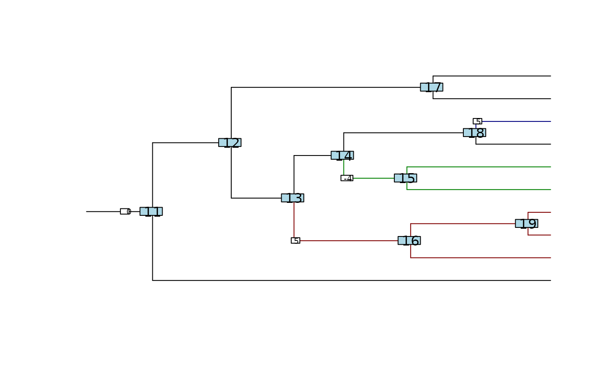

Computation of the optimal values at nodes and tips.
Source:R/shifts_manipulations.R
node_optimal_values.Rdcompute_betas_from_shifts computes the optimal values at the nodes and tips of the
tree, given the value at the root and the list of shifts occurring in the tree.
It assumes an OU model.
Arguments
- param
an object of class
params_process.- phylo
a phylogenetic tree, class
phylo.
Value
Matrix of size ntraits x (ntaxa + Nnode) of the optimal values at the node and tips of the tree. Column names correspond to the number of the node in the phylo object.
Examples
set.seed(1792)
ntaxa = 10
tree <- rphylo(ntaxa, 1, 0.1)
# parameters of the process
par <- params_process("BM", ## Process
p = 2, ## Dimension
variance = diag(0.5, 2, 2) + 0.5, ## Rate matrix
edges = c(4, 10, 15), ## Positions of the shifts
values = cbind(c(5, 4), ## Values of the shifts
c(-4, -5),
c(5, -3)))
plot(par, phylo = tree, traits = 1, value_in_box = TRUE,
shifts_bg = "white", root_bg = "white", ancestral_as_shift = TRUE, root_adj = 5)
nodelabels()

node_optimal_values(par, tree)
#> 1 2 3 4 5 6 7 8 9 10 11 12 13 14 15 16 17 18 19
#> [1,] -4 0 5 -4 0 5 5 5 0 0 0 0 0 0 -4 5 0 0 5
#> [2,] -5 0 -3 -5 0 4 4 4 0 0 0 0 0 0 -5 4 0 0 4